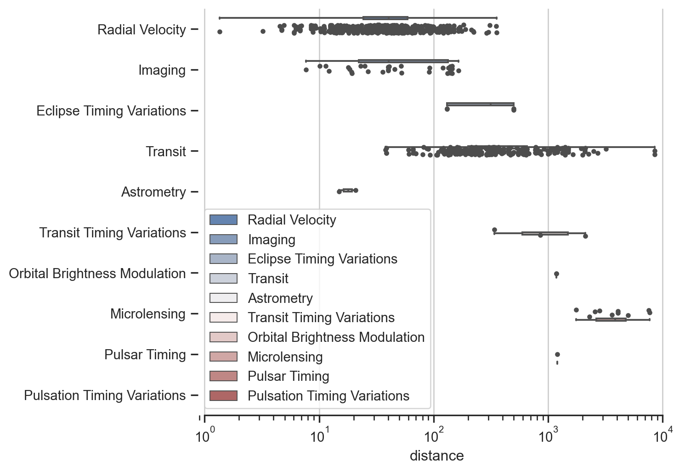
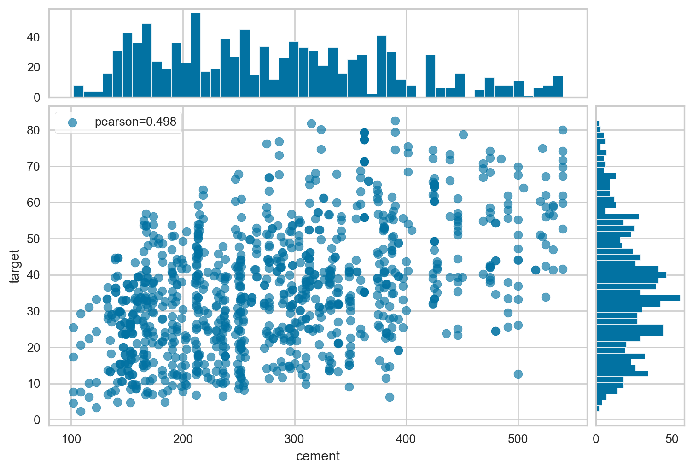

Code
```{python}
for i in range(9):
print(i)
```0
1
2
3
4
5
6
7
8Huayu Liang
November 28, 2023
Here is some sample R code
1 + 1But we also want to run Python
The plot below is from the Seaborn Python library documentation
```{python}
import seaborn as sns
import matplotlib.pyplot as plt
sns.set_theme(style="ticks")
# Initialize the figure with a logarithmic x axis
f, ax = plt.subplots(figsize=(7, 6))
ax.set_xscale("log")
# Load the example planets dataset
planets = sns.load_dataset("planets")
# Plot the orbital period with horizontal boxes
sns.boxplot(
planets, x="distance", y="method", hue="method",
whis=[0, 100], width=.6, palette="vlag"
)
# Add in points to show each observation
sns.stripplot(planets, x="distance", y="method", size=4, color=".3")
# Tweak the visual presentation
ax.xaxis.grid(True)
ax.set(ylabel="")
sns.despine(trim=True, left=True)
```
The plot below is from the Yellowbrick Python library documentation:
```{python}
import numpy as np
from yellowbrick.datasets import load_concrete
from yellowbrick.features import JointPlotVisualizer
# Load the dataset
X, y = load_concrete()
# Instantiate the visualizer
visualizer = JointPlotVisualizer(columns="cement")
visualizer.fit_transform(X, y) # Fit and transform the data
visualizer.show() # Finalize and render the figure
```
<Axes: xlabel='cement', ylabel='target'>This is a change to the markdown text.
Back to top---
title: Post With Code
author: Huayu Liang
date: '2023-10-05'
execute:
echo: fenced
categories:
- random
image: image.jpg
jupyter:
jupytext:
formats: 'qmd:quarto,py:percent,md,ipynb'
text_representation:
extension: .qmd
format_name: quarto
format_version: '1.0'
jupytext_version: 1.15.2
kernelspec:
display_name: Python 3 (ipykernel)
language: python
name: python3
---
Here is some sample R code
```{r}
1 + 1
```
But we also want to run Python
```{python}
for i in range(9):
print(i)
```
```{python}
x = 5
```
```{python}
#| echo: false
#| output: false
# Testing a change in Jupyter notebook
# I'm writing this now in RStudio
# I'm writing this now in Jupyterlab again
import warnings
warnings.filterwarnings("ignore")
```
The plot below is from the [Seaborn Python library documentation](https://seaborn.pydata.org/examples/horizontal_boxplot.html)
```{python}
import seaborn as sns
import matplotlib.pyplot as plt
sns.set_theme(style="ticks")
# Initialize the figure with a logarithmic x axis
f, ax = plt.subplots(figsize=(7, 6))
ax.set_xscale("log")
# Load the example planets dataset
planets = sns.load_dataset("planets")
# Plot the orbital period with horizontal boxes
sns.boxplot(
planets, x="distance", y="method", hue="method",
whis=[0, 100], width=.6, palette="vlag"
)
# Add in points to show each observation
sns.stripplot(planets, x="distance", y="method", size=4, color=".3")
# Tweak the visual presentation
ax.xaxis.grid(True)
ax.set(ylabel="")
sns.despine(trim=True, left=True)
```
The plot below is from the [Yellowbrick Python library documentation](https://www.scikit-yb.org/en/latest/api/features/jointplot.html?highlight=joint%20plot#joint-plot-visualization):
```{python}
import numpy as np
from yellowbrick.datasets import load_concrete
from yellowbrick.features import JointPlotVisualizer
# Load the dataset
X, y = load_concrete()
# Instantiate the visualizer
visualizer = JointPlotVisualizer(columns="cement")
visualizer.fit_transform(X, y) # Fit and transform the data
visualizer.show() # Finalize and render the figure
```
This is a change to the markdown text.